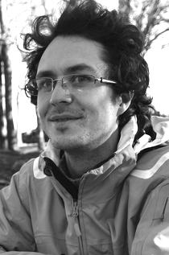

2017-2020
Ingénieur de recherche
Développeur OCaml sur le logiciel d’analyse statique de programmes C Astrée, au sein de l’équipe ANTIQUE. Je travaille sur le support du code assembleur inline et sur la possibilité de vérifier de nouvelles propriétés de sécurité des programmes.

2016-2017
Post-doctorat
Développeur full stack sur le logiciel KAMI au sein de l’équipe PLUME. Basé sur un formalisme de réécriture de graphes, ce framework a pour objectif de faciliter la construction, la composition et la maintenance de bases de connaissances d’interactions entre protéines. Ces connaissances étant souvent partielles et en constante évolution.


2011-2016
Thèse et ATER
Au laboratoire IBISC de l’Université d’Évry-Val-d’Essonne. La thèse s’intitule Systèmes d’agents concurrents - Modélisation et vérification à l’aide de réseaux de Petri. Mes travaux de thèse portent sur le développement d’algorithmes de model-checking adaptés à l’étude de systèmes modulaires. Le problème classique d’explosion combinatoire auquel est soumise l’analyse de ces systèmes peut être atténuée dans certains cas par l’utilisation d’une approche hiérarchique à la vérification.

2010-2011
Master 2 MOPS
Ce master (Modèles, Optimisation, Programmation et Services) de l'université d'Évry-val-d'Essonne propose un parcours spécialisé dans la conception et la validation des systèmes informatiques, que j'ai suivi en parallèle de ma dernière année en école d'ingénieur.
2008-2011
Formation ingénieur ENSIIE

L’École Nationale Supérieure d’Informatique pour l’Industrie et l’Entreprise (anciennement IIE) est une école généraliste en informatique recrutant sur le concours Centrale-Supélec. Spécialisation en troisième année dans les domaines des réseaux et de la spécification/vérification formelle des systèmes.
2006-2008
CPGE au Lycée Chateaubriand de Rennes

Filière MPSI puis MP option informatique.